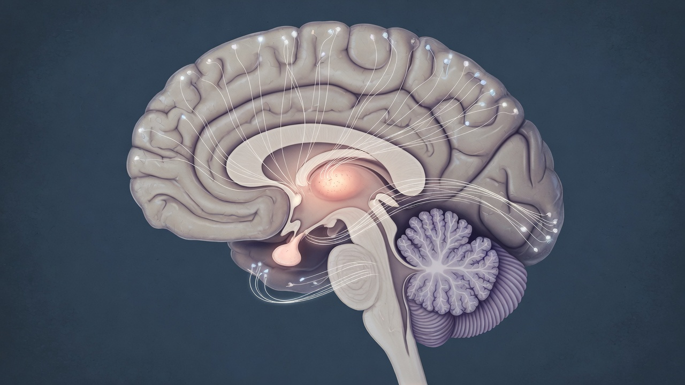

Post-Traumatic Auditory Hallucinations: Causes, Symptoms, and What to Expect
After a traumatic event, survivors commonly report hearing voices — especially of loved ones lost in the incident. Clinicians increasingly recognize this as part of the brain's normal, if distressing, processing of unbearable experience.
When survivors of catastrophic events describe hearing the voices of people they have lost, a common clinical instinct is to reach for a psychiatric diagnosis. But a growing body of research suggests that post-traumatic auditory hallucinations — hearing voices, ambient sounds, or vocal memories following severe trauma — are not only common but may represent an adaptive, if painful, feature of how the human brain processes and integrates traumatic loss.

Studies conducted over the past decade estimate that between 30 and 50 percent of individuals who survive traumatic accidents — particularly those involving the death of a companion — will experience some form of intrusive auditory perception in the weeks following the event. These experiences range from faint, ambient sounds associated with the traumatic scene, to clear and recognizable vocal hallucinations in the voice of the deceased.
"The brain is not malfunctioning when it produces these experiences. It is doing exactly what brains do: attempting to complete an interaction that was never allowed to finish."
— Dr. Marcus Chen, University of Edinburgh Centre for Grief Studies, 2028
The Neuroscience of Auditory Intrusion
The mechanism underlying post-traumatic auditory hallucinations is now fairly well understood. The amygdala — the brain's emotional alarm system — encodes traumatic memories with unusual intensity, often at the expense of the prefrontal cortex's ability to contextualize or suppress them. When a traumatic memory is activated, the brain can replay associated sensory data, including voices and sounds, as if they were occurring in real time.
This is distinct from the chronic, command-type hallucinations associated with psychotic disorders such as schizophrenia. Post-traumatic auditory experiences are typically:
- Temporally linked to a specific memory or loss
- Recognizable in content and voice (usually a known person)
- Diminishing in frequency over weeks to months
- Accompanied by other recognizable PTSD symptoms
- Non-commanding — the voices do not issue instructions
Grief-Related Auditory Phenomena
A related but distinct phenomenon occurs specifically in the context of bereavement. Post-bereavement hallucinations — sometimes called sensory bonds — have been documented across cultures and throughout history. A landmark study published in the Journal of Nervous and Mental Disease in 2026 found that 62% of respondents who had lost a close family member reported hearing their voice on at least one occasion within the first three months of bereavement.
30–50% of trauma survivors report some form of post-traumatic auditory experience within 6 weeks of the event.
62% of bereaved individuals report hearing the voice of the deceased within 3 months of loss.
Symptoms resolve without clinical intervention in the majority of cases within 3–6 months.
Persistent hallucinations beyond 3 months warrant evaluation for PTSD or complicated grief disorder.
When to Seek Medical Attention
Post-traumatic auditory experiences warrant clinical evaluation if any of the following apply:
- The voices persist for more than six weeks without improvement
- The voices are commanding, instructional, or threatening
- The experiences are accompanied by significant deterioration in daily functioning
- The individual cannot distinguish between the auditory experience and external reality
- The experiences are accompanied by other perceptual disturbances
Effective treatments include trauma-focused cognitive behavioral therapy (TF-CBT), EMDR (Eye Movement Desensitization and Reprocessing), and in some cases pharmacological support. For grief-related auditory experiences specifically, structured grief therapy has demonstrated strong outcomes.
A Note on Stigma
One of the most important clinical roles a provider can play is normalizing these experiences. Patients often delay seeking help because they fear being labeled as psychotic or "going crazy." In the context of recent trauma and loss, hearing a familiar voice is almost ordinary. Offering that reassurance is itself therapeutic.